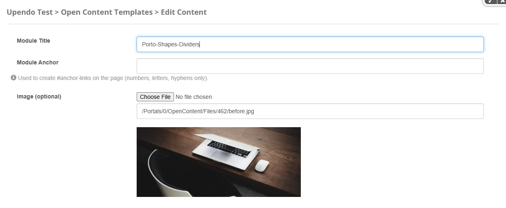
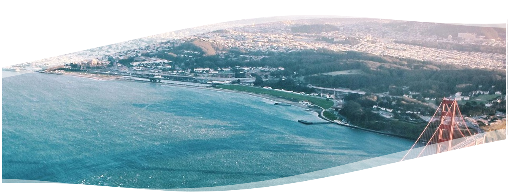
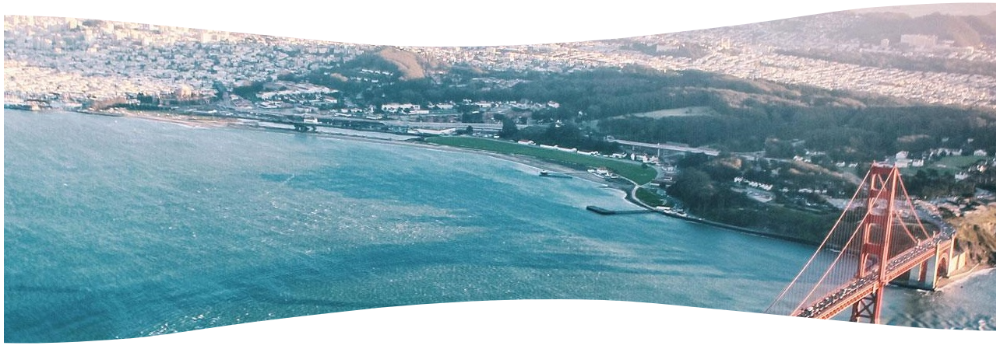
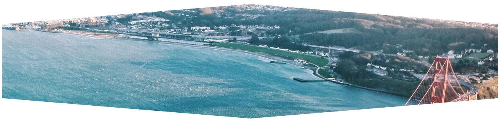

Porto-Shapes-Dividers Documentation
Table of Contents
Overview
The Porto-Shapes-Dividers component allows you to select an image and apply different styles to use it as a visual divider on the page. This helps enhance the structure and design of the interface with custom separators. Various shapes and positions can be configured to fit any design. Porto defines the appearance and behavior of the divider, while its implementation is managed through OpenContent, providing greater flexibility.
For more details, check out the Porto-Shapes-Dividers repository on GitHub or the Porto documentation.
Usage Example
Edit
Properties
| Field Name | Type | Description | Required |
|---|---|---|---|
| Image | Image | Allows selecting an image to which a style shape will be applied, acting as a page divider. | No |
Settings

Settings Properties
| Setting | Type | Description |
|---|---|---|
| Style | Select |
Specifies the style of the shape divider. Options include:
Find examples of styles at: Shapes & Dividers |
Views
Style 1:
Style 4:
Style 14:
Notes
- Use
Styleto select the desired shape divider. Each style offers a unique visual effect, such as waves, zigzags, or polygons. Refer to the Settings Properties section for detailed descriptions of each style. - Ensure the selected
Imagecomplements the chosen style. For example, high-contrast images work well with bold shapes likeStyle 5orStyle 18. - Preview your changes to verify that the shape divider aligns properly with your page's content and design.
- Test the component on different screen sizes to ensure responsiveness and visual consistency across devices.
For additional guidance, refer to the Porto Shapes & Dividers Documentation.